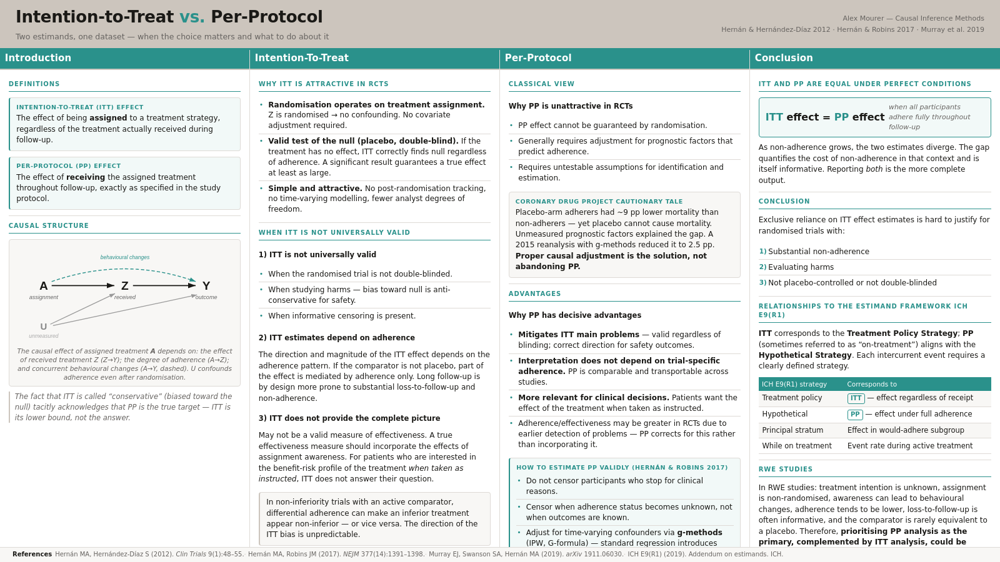

Two estimands, one dataset — and why the choice matters more than it seems.

Poster summarising this post — open full-screen.
Every comparative study, whether a randomised trial or an observational database analysis, implicitly or explicitly targets one of two fundamentally different causal quantities: the effect of being assigned a treatment, or the effect of actually receiving it. These are not the same thing, and the gap between them grows whenever patients deviate from their assigned strategy — which in long-term pragmatic trials and real-world evidence studies is not the exception but the rule. Clarifying which effect is being estimated is not a technicality; it is what makes a result interpretable and actionable.
The causal effect of being assigned to one treatment strategy compared with another, regardless of whether patients actually received or adhered to the assigned treatment during follow-up.
The causal effect of receiving the assigned treatment strategies throughout follow-up, exactly as specified in the study protocol — the effect that would have been observed if all participants had fully adhered.
The distinction hinges on the role of adherence. In any trial, treatment is first assigned (by randomisation or by a clinical decision) and then received to varying degrees. Let $Z$ denote treatment assignment and $A$ denote treatment actually received. ITT compares outcomes across levels of $Z$; PP compares outcomes across levels of $A$, conditioning on full adherence throughout follow-up.
The causal effect of the assigned treatment $Z$ on the outcome $Y$ operates through three distinct channels, illustrated in the diagram below: the effect of the received treatment ($A \to Y$); the degree to which assignment translates into receipt ($Z \to A$, i.e., adherence); and any direct behavioural changes triggered by assignment awareness itself ($Z \to Y$, a path that blinding is designed to block). Unmeasured factors $U$ that simultaneously predict adherence and the outcome can confound the per-protocol effect, even in a randomised trial.
Figure 1 — The causal structure linking assignment $Z$, received treatment $A$, unmeasured adherence predictors $U$, and outcome $Y$. The ITT effect operates along all paths from $Z$ to $Y$. The PP effect isolates the path $A \to Y$ and requires adjustment for $U$, which confounds adherence even after randomisation.
Formally, the ITT estimand targets $\psi_{\text{ITT}} = \E[Y^{Z=1}] - \E[Y^{Z=0}]$, the average difference in outcomes under universal assignment to each arm. Because $Z$ is randomised, this quantity is identified without any covariate adjustment. The PP estimand targets $\psi_{\text{PP}} = \E[Y^{A=1,\,\text{full adherence}}] - \E[Y^{A=0,\,\text{full adherence}}]$, the effect in a world where all participants adhered to their assigned protocol. Identification of $\psi_{\text{PP}}$ requires additional assumptions, even in a randomised trial.
The dominance of ITT in clinical trial reporting is not accidental. It has three genuine virtues that made it the natural default for an era of short, double-blind, placebo-controlled trials.
Randomisation protects it. Because $Z$ is randomised, the groups assigned to each arm are exchangeable at baseline. The ITT comparison $\E[Y \mid Z=1] - \E[Y \mid Z=0]$ is an unbiased estimate of $\psi_{\text{ITT}}$ without any adjustment for confounders. No post-randomisation decisions, however complex, can introduce confounding at the level of $Z$.
It provides a valid test of the null in placebo-controlled, double-blind trials. If the treatment has no causal effect, then neither $A$ nor $Z$ can cause $Y$ to change. An ITT analysis will correctly yield a null result regardless of adherence. Conversely, if the ITT analysis detects an effect, the true effect must be at least as large — making it genuinely conservative in the sense of being biased toward the null. For regulatory approval of efficacy this has historically been considered sufficient.
It is simple. The ITT analysis requires only that patients be analysed in the group to which they were assigned. No tracking of post-randomisation treatment decisions, no measurement of time-varying confounders, no modelling of adherence. This simplicity reduces both analyst degrees of freedom and the risk of outcome-driven analytic choices.
Each of the three virtues above comes with a corresponding failure mode. The situations in which ITT breaks down are not rare edge cases; they are the norm in modern comparative effectiveness research.
The null-hypothesis validity argument requires double-blinding. In an open-label trial, patients know their assignment. This awareness can modify behaviour — adherence to co-medications, lifestyle changes, contact with the healthcare system — and these behavioural changes are part of the direct $Z \to Y$ path. An ITT analysis in an open-label trial estimates the combined effect of the drug and the behavioural changes it triggers, not the treatment effect alone.
For safety outcomes, the conservatism argument reverses entirely. If an ITT analysis of a potential harm finds no statistically significant effect, that is not reassurance that the treatment is safe — the attenuation from non-adherence may have obscured a genuine harmful effect. Hernán and Hernández-Díaz (2012) describe such a study as a “randomised cynical trial”: one that cannot detect toxicity by design.
In non-inferiority trials with an active comparator, matters are worse. When the two arms have different adherence patterns, the direction of the ITT bias depends on which arm has lower adherence. It is entirely possible for an ITT analysis to declare a genuinely inferior treatment non-inferior because the reference arm has lower adherence, pulling both groups toward an attenuated null. Hernán and Hernández-Díaz (2012) illustrate this formally with a scenario where the new treatment reduces blood glucose by 10 mg/dL and the reference by 22 mg/dL, yet differential drop-out yields an ITT estimate below the non-inferiority margin.
Finally, informative censoring invalidates both ITT and PP analyses if not properly handled. When patients are lost to follow-up for reasons related to their health status, standard complete-case analyses of either estimand are biased.
Even when the ITT analysis is valid, the result it produces is trial-specific. The magnitude of $\psi_{\text{ITT}} = \E[Y^{Z=1}] - \E[Y^{Z=0}]$ depends on the adherence pattern of participants in that particular trial, not just on the treatment itself. Two trials with identical treatment effects but different non-adherence rates will produce different ITT estimates. The ITT effect in a tightly monitored efficacy trial with 95% adherence cannot be directly extrapolated to a pragmatic setting where 40% of patients discontinue within six months.
Long-term trials are by design more vulnerable. Sustained treatment strategies are precisely the ones most relevant to chronic disease management, and precisely the ones where substantial non-adherence and loss to follow-up accumulate over time. As Hernán and Robins (2017) note, the ITT effect estimate from such trials “may not be directly relevant for guiding decisions in clinical settings with different adherence patterns.”
The common characterisation of the ITT effect as “conservative” (i.e., biased toward the null) tacitly acknowledges that the PP effect is the quantity of primary interest — the one whose true value we want to know. If ITT is the floor, PP is the target. Calling ITT conservative while never estimating PP is to report the lower bound and call it the answer.
Effectiveness is conventionally defined as how well a treatment works in everyday practice. It is sometimes argued that ITT, precisely because it incorporates real-world non-adherence, is the most clinically meaningful measure of effectiveness. Hernán and Hernández-Díaz (2012) show this argument is flawed.
First, the degree of adherence in a trial may differ from the degree of adherence in clinical practice, for at least two reasons. Trial participants are closely monitored and have accepted an informed consent procedure; both effects tend to increase adherence above clinical norms. Conversely, once trial results are published, community adherence may change — possibly increasing after a positive trial, possibly decreasing if the trial finds adverse effects. The ITT estimate from the trial therefore does not predict the effectiveness that will actually be observed in clinical practice.
Second, and more fundamentally, patients deciding whether to initiate and adhere to a treatment want to know the expected benefit if they take it as directed, not the population-average outcome in a trial where a substantial proportion did not. For a couple evaluating contraception methods, the ITT failure rate in a trial where 40% of participants used the method incorrectly is not the relevant number. The per-protocol failure rate for consistent users is.
The per-protocol effect $\psi_{\text{PP}}$ estimates what would happen if all patients followed their assigned protocol. Unlike $\psi_{\text{ITT}}$, this quantity does not depend on the trial-specific degree of adherence. Two trials with identical treatment effects and different adherence patterns will produce different ITT estimates but, if correctly estimated, the same PP estimate. This makes PP effects comparable across trials and more easily transportable to clinical settings with their own adherence patterns.
The PP effect also corresponds more naturally to what regulators, clinicians, and patients actually want to know when evaluating a treatment's benefit-risk profile: the effect of the treatment when used as instructed. Murray, Swanson, and Hernán (2019) argue that in pragmatic trials — which are specifically designed to guide clinical decisions rather than seek regulatory approval — the PP effect deserves particular prominence, precisely because pragmatic trials tend to have lower adherence and are therefore the setting where the ITT effect is least informative.
The traditional objection to PP analyses is that they sacrifice the protection of randomisation: once we condition on received treatment $A$ rather than assigned treatment $Z$, the groups are no longer exchangeable. Patients who adhere to treatment may differ systematically from those who do not on prognostic factors that also affect the outcome, introducing post-randomisation confounding.
The standard “naive” PP analysis — simply restricting follow-up to the period during which a participant was adherent, and censoring them at non-adherence — treats non-adherence as if it were independent of health status. This is almost never true. Patients often discontinue treatment because of side effects, disease progression, or deteriorating health, all of which also predict the outcome. Naive PP analyses can therefore be more biased than ITT analyses, a lesson driven home by the Coronary Drug Project.
In this landmark randomised trial (1966–1975), a post-hoc analysis found that patients in the placebo arm who adhered to placebo had substantially lower 5-year mortality (roughly 9 percentage points) than those who did not adhere to placebo. Since placebo cannot affect mortality, this difference had to reflect unmeasured prognostic factors that predicted both adherence and survival. The finding was widely cited as evidence that per-protocol analyses are inherently unreliable.
A reanalysis published in 2015 (Hernán and Robins, 2017) revised this conclusion. Using logistic regression with standardised estimates, an improved definition of adherence that decoupled it from loss to follow-up, and g-methods to adjust for post-randomisation prognostic factors, the adjusted difference in 5-year mortality between adherent and non-adherent placebo patients fell from 9.4 to 2.5 percentage points. Proper adjustment for time-varying confounders — not abandonment of PP analysis — was the solution.
Three rules, articulated by Hernán and Robins (2017), are required to obtain a valid per-protocol estimate. First, participants should not be censored simply because they stopped treatment for clinical reasons — stopping for an adverse event is not a protocol deviation, it is part of the protocol. Second, participants should be censored when their adherence status becomes unknown, not when their outcome becomes known through other means. Third, adjustment must be made for time-varying prognostic factors that predict adherence and are themselves affected by prior treatment — the classic feedback loop that standard regression cannot handle and that requires g-methods such as inverse probability weighting or the g-formula.
When all participants adhere perfectly to their assigned treatment throughout follow-up, $Z = A$ for every individual. The two estimands then target the same quantity: $\psi_{\text{ITT}} = \psi_{\text{PP}}$. This equivalence is the limiting case that unifies the two approaches. As non-adherence grows, the two estimates diverge, with $|\psi_{\text{ITT}}| \leq |\psi_{\text{PP}}|$ in the placebo-controlled setting.
This relationship has a practical implication. If a well-conducted analysis finds a large discrepancy between the ITT and PP estimates, that discrepancy is informative: it quantifies the cost of non-adherence in this specific population and trial context, and it helps clinicians advise patients on the expected benefit under realistic adherence versus under optimal adherence. Reporting both estimates together, rather than choosing between them, is therefore the more complete scientific output.
The ICH E9(R1) addendum on estimands in clinical trials (2019) formalises the idea that every clinical trial should specify, before data collection, the precise causal quantity it intends to estimate. The addendum introduces the concept of intercurrent events — post-randomisation events that affect either the interpretation of, or the ability to observe, the outcome of interest — and requires that each such event be handled through an explicit strategy.
Non-adherence and treatment discontinuation are the canonical intercurrent events. The two main strategies the addendum defines map directly onto the ITT and PP dichotomy:
| ICH E9(R1) Strategy | Corresponds to | What is being estimated |
|---|---|---|
| Treatment policy strategy | ITT | Effect of the assigned treatment, regardless of whether it was taken |
| Hypothetical strategy | PP | Effect in a hypothetical world where all patients adhered to the protocol |
| Principal stratum strategy | — | Effect in the subgroup who would adhere under either arm |
| While on treatment strategy | Partial PP | Effect while treatment is ongoing (event rate before discontinuation) |
A key contribution of the ICH E9(R1) framework is to make explicit that the choice of strategy is a scientific decision, not a statistical one. It must reflect the clinical question of interest — which itself depends on whether the trial is designed for regulatory approval, clinical guidance, or comparative effectiveness. Both the treatment policy strategy and the hypothetical strategy are legitimate targets; what is not legitimate is leaving the choice implicit or allowing it to be made post-hoc based on convenience.
Each intercurrent event requires its own explicitly stated strategy. In a trial with multiple intercurrent events — treatment discontinuation, rescue medication use, and loss to follow-up — the estimand must specify a strategy for each. Mixed strategies are permissible: for example, a treatment policy strategy for rescue medication (whatever the patient takes is part of the treatment policy being evaluated) combined with a hypothetical strategy for discontinuation due to adverse events.
In randomised trials, the ITT analysis enjoys its main advantages because treatment assignment is randomised and therefore unconfounded. In real-world evidence (RWE) studies, there is no randomisation. Treatment is chosen by clinicians and patients based on clinical judgment, patient preferences, and characteristics that also predict the outcome. Assignment is not exogenous, and there is no analog of $Z$ that is free of confounding.
The other features that drive non-adherence in trials are also amplified in observational settings. Treatment intention is rarely recorded, making it difficult to even define an ITT-like estimand. Awareness of treatment is universal, so behavioural changes driven by assignment awareness are the norm rather than a controlled exception. Adherence is systematically lower in routine care than in monitored trials. Loss to follow-up is often informative and linked to clinical events. And the comparator is rarely a placebo, making the direction of any adherence-related bias unpredictable.
Under these conditions, a naive ITT-like analysis — comparing patients who initiated one treatment against those who initiated another, regardless of what they subsequently received — estimates the effect of treatment initiation in a population with the specific adherence patterns observed in that database. This estimate may be deeply context-specific and difficult to interpret. A per-protocol analysis, properly conducted with adjustment for time-varying confounders, targets a quantity that is conceptually cleaner and more transferable across settings.
In real-world evidence studies, the per-protocol effect is generally the more informative primary target, complemented by an ITT-like analysis as a sensitivity check. This reverses the conventional hierarchy of clinical trials — but the reversal is justified: the ITT effect in an RWE setting carries neither the randomisation protection of a trial nor the interpretive clarity of a well-defined protocol, whereas the PP effect, once properly estimated with g-methods, answers the question that clinicians and patients actually care about.
Hernán and Hernández-Díaz (2012) recommend that all RCTs with substantial non-adherence or loss to follow-up be analysed using both approaches: an ITT analysis to estimate the effect of assigned treatment, and a PP analysis — appropriately adjusted via inverse probability weighting or g-estimation — to estimate the effect of treatment as received. The same logic applies, with additional urgency, to observational studies.
Hernán MA, Hernández-Díaz S (2012). Beyond the intention-to-treat in comparative
effectiveness research. Clinical Trials 9(1):48–55.
Hernán MA, Robins JM (2017). Per-protocol analyses of pragmatic trials.
New England Journal of Medicine 377(14):1391–1398.
Murray EJ, Swanson SA, Hernán MA (2019). Guidelines for estimating causal effects in
pragmatic randomized trials. arXiv preprint 1911.06030.
ICH E9(R1) (2019). Addendum on estimands and sensitivity analysis in clinical trials
to the guideline on statistical principles for clinical trials. International Council
for Harmonisation of Technical Requirements for Pharmaceuticals for Human Use.
Gervasoni EE, De Bus L, Vansteelandt S, Dukes O (2026). On estimands in target trial
emulation. arXiv preprint 2601.03377.